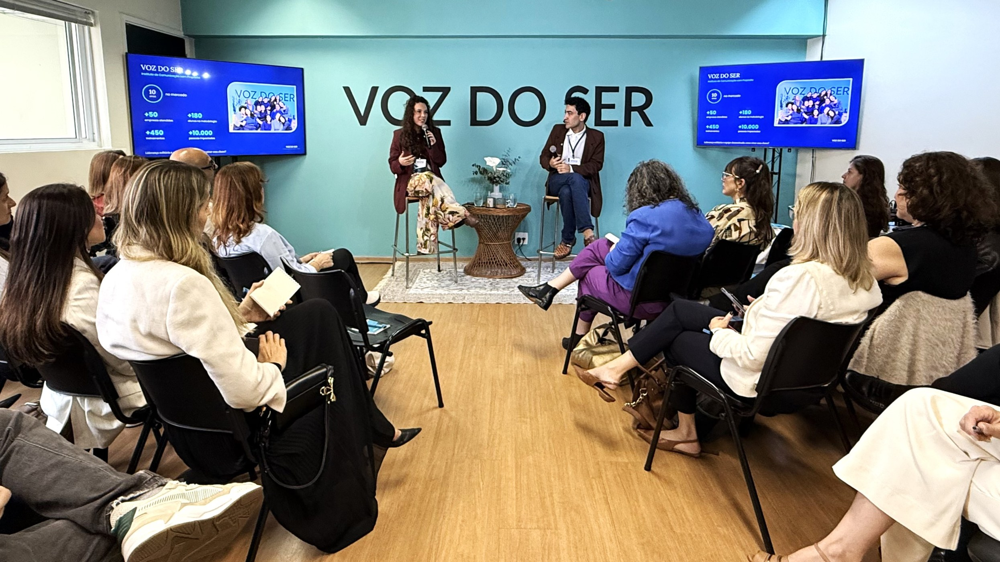
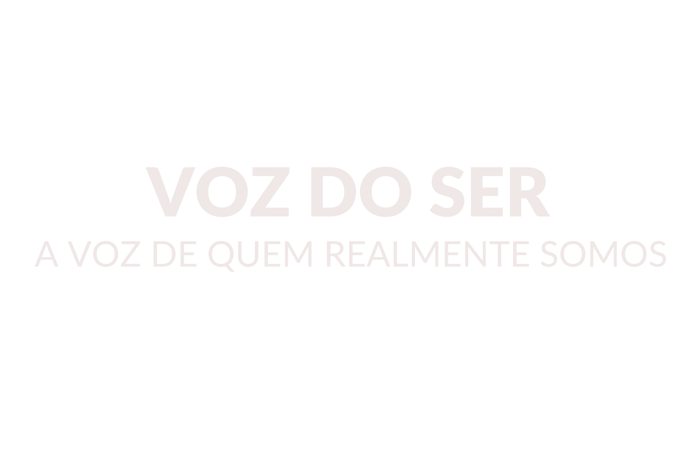

Continuidade · 12 meses · Outubro de 2026 a setembro de 2027
Voz do Ser
Programa Comunicação com Propósito
Desenvolvimento dos sucessores e fortalecimento da liderança e da cultura organizacional.
Proposta de continuidade · CONX
Instituto Voz do Ser

O programa
A continuidade do que já começou na CONX
Como continuidade do trabalho desenvolvido na CONX com os sucessores e das reuniões realizadas com Lizane, Simone e os sócios Yorki e Ricardo,
nasce o Programa Comunicação com Propósito.
Com duração de 12 meses, de outubro de 2026 a setembro de 2027, o programa se estrutura em duas frentes complementares.
Frente 1
Desenvolvimento dos Sucessores
Fortalecimento da liderança, da credibilidade e da participação dos sucessores, potencializando suas qualidades, desenvolvendo pontos de melhoria e preparando-os para uma atuação mais comunicadora, integrada e inovadora.
Frente 2
Fortalecimento da Cultura Organizacional
Desenvolvimento de uma cultura mais alinhada, colaborativa e engajada, fortalecendo propósito, comunicação, relações, feedback, escuta e desenvolvimento.
Proposta de continuidade · CONX02
O que buscamos
Principais metas
01
Fortalecer a credibilidade, participação e liderança dos sucessores
02
Quebrar barreiras familiares e geracionais, ampliando integração e colaboração
03
Desenvolver uma liderança comunicadora
04
Ampliar alinhamento, motivação e engajamento do time
05
Fortalecer propósito, posicionamento e cultura organizacional
06
Implementar uma cultura de feedback, escuta e desenvolvimento
07
Impulsionar o crescimento individual, coletivo e organizacional
Proposta de continuidade · CONX03
Frente 1
Desenvolvimento dos Sucessores
Durante 12 meses, os quatro sucessores participarão de uma jornada contínua de desenvolvimento, combinando mentorias individuais, encontros coletivos e alinhamento empresarial.
Mentoria individual
Mensal · 2 horas cada
Cada sucessor terá um encontro presencial mensal com uma dupla de Terapeutas da Comunicação.
- Comunicação
- Liderança
- Inteligência Emocional
- Inteligência Relacional
Durante todo o mês, contarão também com assessoria via WhatsApp e condições especiais para sessões adicionais de Terapia da Comunicação, caso desejem.
Encontro dos Sucessores
Mensal · 3 horas
Encontro presencial com Gabriel, Rodrigo, Guilherme e Luisa, focado no desenvolvimento das relações entre os sucessores e no treinamento de situações coletivas de comunicação, liderança e tomada de decisão.
Alinhamento Empresarial
Mensal · 2 horas
Encontro com os sócios Ricardo e Yorki e os quatro sucessores para fortalecer alinhamento, comunicação, relações e direcionamentos entre as duas gerações.
A meta é o alinhamento e a transferência de conhecimento e visão empresarial dos pais para os filhos.
Jornada mensal
Semanas 1 e 2
Mentorias individuais
Semana 3
Encontro dos Sucessores
Semana 4
Alinhamento Empresarial
Proposta de continuidade · CONX04
Frente 2
Fortalecimento da liderança e da cultura organizacional
A partir do alinhamento realizado com o RH, esta frente propõe uma jornada de 12 meses para desenvolver a liderança e, ao mesmo tempo, envolver toda a empresa no fortalecimento da cultura organizacional.
Alinhamento com RH
Mensal
Reunião mensal com Lizane para acompanhamento do processo, definição das temáticas e alinhamento dos próximos passos de desenvolvimento da liderança e da organização.
Treinamento de Diretores
Mensal · 3 horas · 6 diretores
Treinamento presencial mensal trabalhando temas como liderança, inteligência emocional e relacional, Comunicação com Propósito e cultura de feedback.
Treinamento de Líderes
Mensal · 3 horas
Treinamento presencial alternando os grupos a cada mês.
Mês 1: os 25 líderes do escritório
Mês 2: os 15 líderes de obras
Cada grupo participa de um treinamento bimestral, somando 6 treinamentos anuais por grupo.
Encontro com Todo o Time
Mensal · 1 hora · online
Palestra e roda de conversa aberta a toda a empresa, em data fixa. A cada mês, um tema definido em conjunto com o RH leva para toda a organização os principais aprendizados desenvolvidos com sócios, diretores e lideranças.
Entre as temáticas
Inteligência Emocional e Relacional · Assédio Moral e Sexual · Diversidade · Saúde mental e Cultura · Engajamento · Liderança com Propósito · Comunicação e Relacionamentos
Proposta de continuidade · CONX05
Investimento
Mensal, por frente
As frentes podem ser contratadas separadamente ou como um único programa.
Frente 1
Desenvolvimento dos Sucessores
- 4 mentorias individuais, de 2 horas cada
- 1 treinamento coletivo dos sucessores, de 3 horas
- 1 conversa guiada entre sócios e sucessores, de 2 horas
- Assessoria e suporte remoto via grupos de WhatsApp, à vontade
Investimento mensal
R$ 19.400,00
Frente 2
Fortalecimento da Liderança e da Cultura
- 1 reunião mensal com o RH, de até 2 horas
- 1 treinamento mensal aberto ao time, de 1 hora
- 1 treinamento de diretoria, de 3 horas
- 1 treinamento de liderança, de 3 horas
- Assessoria e suporte remoto via grupos de WhatsApp, à vontade
Investimento mensal
R$ 17.860,00
Programa completo · Frentes 1 e 2
Time Voz do Ser implementando a Comunicação com Propósito de forma integrada, desenvolvendo os sucessores, transformando a liderança e fortalecendo a cultura da CONX.
de
R$ 37.260,00
R$ 31.670,00
por mês
15% de desconto
Proposta de continuidade · CONX06

Próximo passo
Doze meses para consolidar o que já começou
Estamos à disposição para definir a data de início e o calendário dos encontros.
Proposta de continuidade · CONX
07